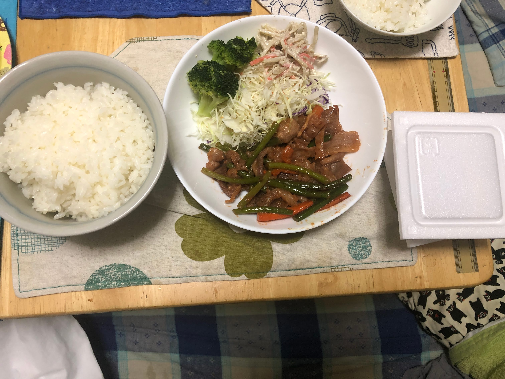
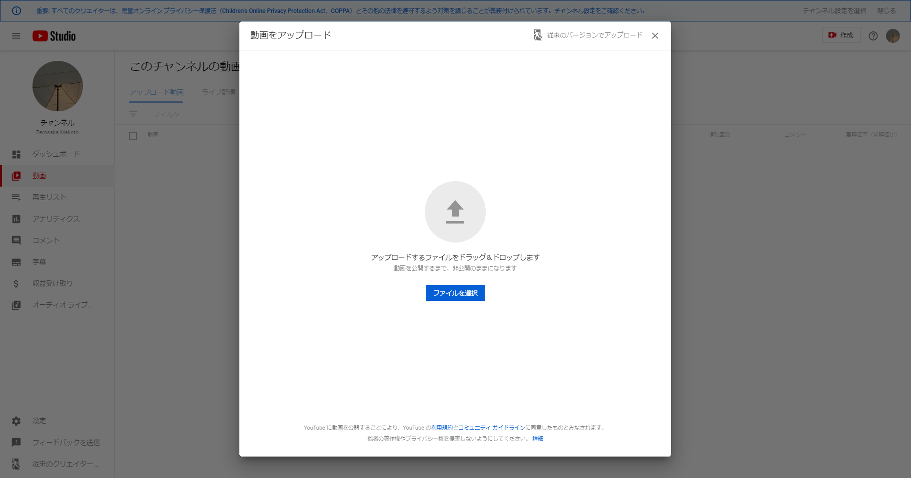
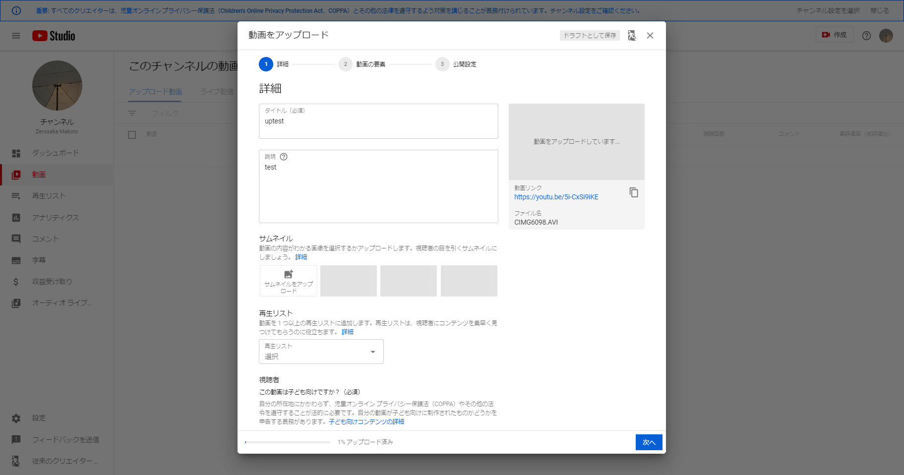
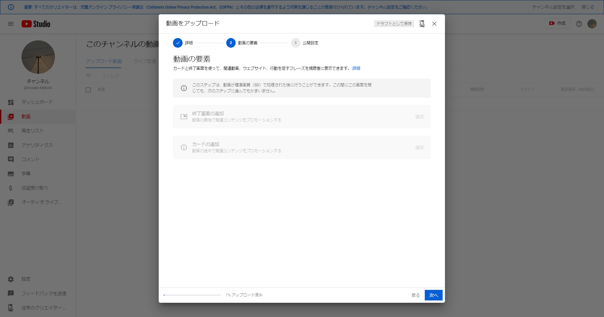
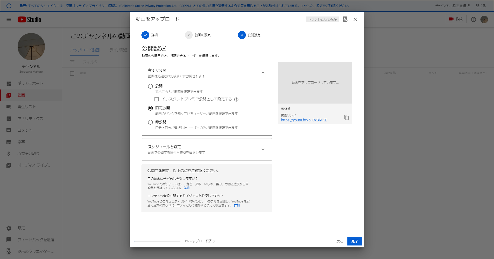
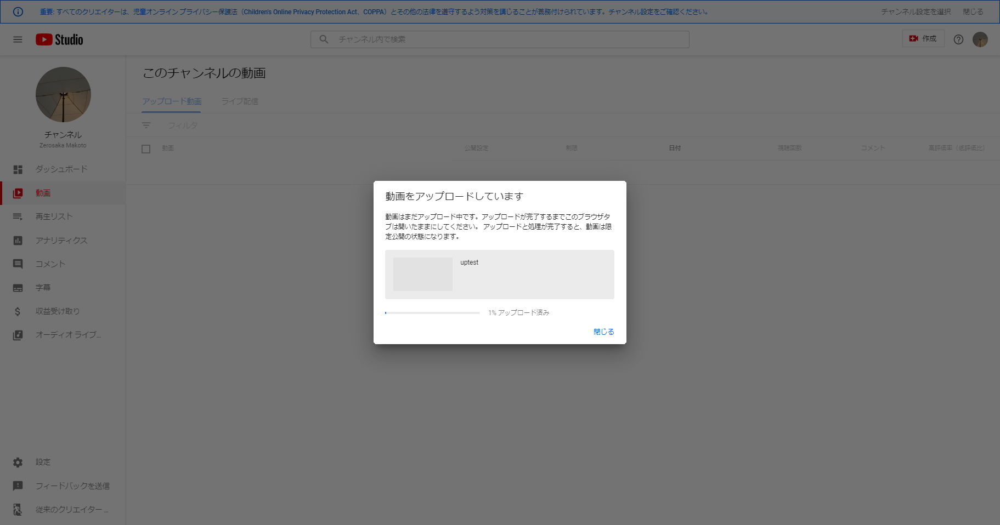

限定公開によるYoutubeでの動画共有とついでにやることのすすめ
友人になんか教えろと言われたので仕方なく。今日はYoutubeで限定公開をする方法を解説します。
－２．家に帰ります
これが結構大変。特に寒い時期なんかは冷たい風にぶっ刺されるような感覚がするので。
特に寒い日は下にこっそり体操服を来ていくのが吉でしょう。
－１．パソコン関連の動画を見ます
自作パソコン関連の動画なんかいいんですよ。カスタムが特に効いてる人なんか特に。
あと、去年末くらいに発表・発売された新型Mac Pro関連もいいでしょう。
一例を貼っておきます：
０．動画を編集します
無編集でいい動画なら飛ばして下さい。あ、なんなら、－１も飛ばしていいです。
楽しければ１時間の浪費は浪費ではなく消費です。必要経費です。出張で北欧の最先端図書館にでも行った感覚になりましょう。あれは本当にすごいけど。人の金で行きたいけど。
編集ソフトはWindowsではAviUtlがおすすめです。MacとかMacBookだったらiMovie一択かなぁ。
ちなみに今職業としてYoutuberやってる方の大半はAdobe Premiereとかいうソフトを使っているらしいです。
これ、最小のパッケージでも月額税抜2480円です...やっぱりAdobeって（価格も機能もフォントも）偉大。
ちなみに学割だと月額税別1980円です。結構リーズナブル。
ちなみに一年分まとめて購入とかをすることも出来るらしいです。
Adobeの料金のことはデザイナー界隈では「アドビ税」と呼ばれています。それほど素晴らしいソフトだということがわかりますね。
まあ、結局の所は、商業とかの動画じゃない限りはAviUtlがおすすめです。
それぞれの使い方は案ずるより産むが易し。
２分の１．チャンネルを用意します
Youtubeチャンネルを用意します。限定公開でもチャンネルは必要です。
もし学校のアカウントがあるなら、自分用のGoogleアカウントでやりましょう。 なぜかというと、気楽にやれるのが自分用のアカウントかなぁ、ということですね。
同じ理由でこないだの部活向けも自分用の昔から持ってるアカウントで上げています。
チャンネル名は適当でいいです。「Bluehair4706」とか。（まあ、あんまりダサいとアレですが...）
１０分の２π．ご飯を食べます
大事。超大事。ちなみに今日のご飯はこれでした。

１．動画をアップロードして設定します
やっと１です。
基本的にはこの４段階で進んでいきます。画像を出しますね。


えーと、ここにきて説明がめんどくさくなってきましたがちゃんとやっていきましょう。
まず、普段の画面の右上にあるビデオカメラのマークをクリックしましょう。
そうすると、１枚目の画面が出てきます。なので、エクスプローラーを起動して書き出した動画ファイルを探しましょう。
見つけたら、Youtubeのアップロード画面にD&D。すると、なんか動きます。
ちなみに、このアニメーションは打ち上げを模しています。よく専門用語でローンチなんていいますね。
すると、２枚目のような感じになるので、タイトルと説明欄をセットしましょう。
下の方に、「児童向けコンテンツかどうかを設定する」という欄があるので必ず設定しましょう。
進む。
３枚目はまあ知らん案件なのでスキップしましょう。進む。
そして、本命の４枚目。
写真通りになってなければ「今すぐ公開」のとこをクリックしましょう。
今回は限定公開なので、真ん中の「限定公開」を選択します。
「非公開」は完全に公開してくれません。リンクを渡してもだめです。
完了。
正常に完了すると、こういう画面になるはず。

２分のπ．待つ。ひたすら待つ。
待ち時間は書き出し方法に依存します。AviUtlのプラグインを使ったmp4出力だと結構早いですが、内臓のavi出力は結構かかってしまいます。
待ちましょう。せっかくパソコンだからブラウザゲーはいかが？
おすすめはInnKeeperとかShopEmpireシリーズ、あとはREACTOR-KNOCKOFFとか。
あ、プログラミングとかもいいですよ。vbsは付属メモ帳だけで始められるから非常に便利。
２．おめでとう。この動画は限定公開されました。
リンクを必要な各所に送りつけましょう。
ただ、リンクを知られたら動画を見ることが出来てしまうので要注意。
とまあ、こんな感じです。余計なこと書きすぎてもう本文だけでも６０行です。
ファイル全体だと今８７行ですね。
理解していただけたら嬉しい次第です。簡易的な必要な解説しかしていない（解説に限る。生地全体は蛇足でA4用紙を埋められそうなレベル。）ので、なんかわかんないことがあれば気軽に聞いて下さい。
じゃ、ありがとうございました。次回も是非御覧ください。
感想などはTwitterハッシュタグの#ZD_ShortMessageに書いていただけると助かります。弊ページコメント欄ありませんので。
Tweet
記事一覧に戻る
Consoles